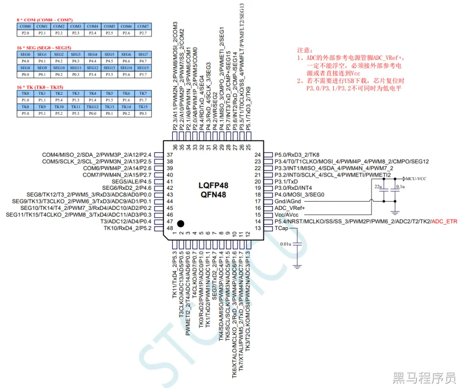
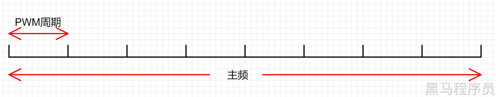
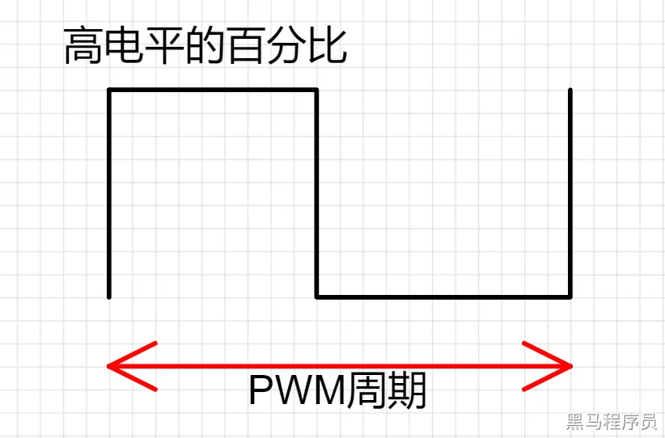

<!DOCTYPE lake>
<p data-lake-id="u9f8fd5ce" id="u9f8fd5ce"><strong><span class="lake-fontsize-14" data-lake-id="u063fc029" id="u063fc029">PWM基础概念</span></strong><span class="lake-fontsize-14" data-lake-id="u3f8cd130" id="u3f8cd130"><br/></span><span data-lake-id="u7fc8ad15" id="u7fc8ad15">PWM全称是脉宽调制（Pulse Width Modulation），是一种通过改变信号的脉冲宽度来控制电路输出的技术。PWM技术在工业自动化、电机控制、LED调光等领域广泛应用。</span><span data-lake-id="u5f5613af" id="u5f5613af"><br/></span><span data-lake-id="u4e80b054" id="u4e80b054">PWM是一种将数字信号转换为模拟信号的技术，它通过改变信号的占空比来控制输出的电平。在STC8H中，PWM输出的</span><strong><span data-lake-id="ub22b01ef" id="ub22b01ef">频率</span></strong><span data-lake-id="ua8c112b5" id="ua8c112b5">和</span><strong><span data-lake-id="u69fbd295" id="u69fbd295">占空比</span></strong><span data-lake-id="u9e00b4ee" id="u9e00b4ee">可以由程序控制，因此可以用来控制各种电机、灯光和其他设备的亮度、速度等参数。</span><span data-lake-id="uaaec2a51" id="uaaec2a51"><br/></span><strong><span class="lake-fontsize-14" data-lake-id="ucddd1931" id="ucddd1931">STC8H芯片</span></strong><span class="lake-fontsize-14" data-lake-id="uc30c29fd" id="uc30c29fd"><br/></span><span data-lake-id="ue4199c13" id="ue4199c13">STC8H 系列的单片机内部集成了8 通道 16 位高级PWM 定时器，分成两周期可不同的 PWM，分别命名为 PWMA 和PWMB ，可分别单独设置。</span><span data-lake-id="u9f64f206" id="u9f64f206"><br/></span><span data-lake-id="ud5b3b761" id="ud5b3b761">第一组 PWMA 可配置成4 组互补/对称/死区控制的PWM 或捕捉外部信号。</span><span data-lake-id="u9860a73e" id="u9860a73e"><br/></span><span data-lake-id="u44460772" id="u44460772">第二组 PWMB 可配置成4 路PWM 输出或捕捉外部信号。</span><span data-lake-id="ubef04ffc" id="ubef04ffc"><br/></span><span data-lake-id="uf562de6e" id="uf562de6e">两组 PWM 的时钟频率可分别独立设置。</span><span data-lake-id="uf2097bfd" id="uf2097bfd"><br/><br/></span></p><p data-lake-id="u60168b7f" id="u60168b7f"></p><p data-lake-id="ud1767130" id="ud1767130"><span data-lake-id="u3c3d6390" id="u3c3d6390"><br/></span><span data-lake-id="u406ad7be" id="u406ad7be">PWM与引脚对应关系如下图：</span><span data-lake-id="ub9f8a08e" id="ub9f8a08e"><br/><br/></span></p><table class="lake-table" data-lake-id="GxKgQ" id="GxKgQ" style="width: 546px"><colgroup><col width="77"/><col width="222"/><col width="124"/><col width="123"/></colgroup><tbody><tr data-lake-id="uef4bdf55" id="uef4bdf55"><td data-lake-id="u99d2be88" id="u99d2be88" style="background-color: rgb(129, 223, 228)"><p data-lake-id="u17e76cd8" id="u17e76cd8"><strong><span data-lake-id="u51bf684d" id="u51bf684d">PWM</span></strong><span data-lake-id="u595a86bf" id="u595a86bf"><br/><br/></span></p></td><td data-lake-id="u4a4510d2" id="u4a4510d2" style="background-color: rgb(129, 223, 228)"><p data-lake-id="u910536ad" id="u910536ad"><strong><span data-lake-id="uc9b65784" id="uc9b65784">PWM通道</span></strong><span data-lake-id="ub76d766d" id="ub76d766d"><br/><br/></span></p></td><td colspan="2" data-lake-id="u2e4337af" id="u2e4337af" style="background-color: rgb(129, 223, 228)"><p data-lake-id="u536d1b01" id="u536d1b01"><strong><span data-lake-id="udce72092" id="udce72092">对应引脚</span></strong><span data-lake-id="u884b63fc" id="u884b63fc"><br/><br/></span></p></td></tr><tr data-lake-id="u284bdf35" id="u284bdf35"><td data-lake-id="u3ccff0e5" id="u3ccff0e5"></td><td data-lake-id="ue059179b" id="ue059179b"></td><td data-lake-id="u6cb0e792" id="u6cb0e792"><p data-lake-id="u0c713714" id="u0c713714"><strong><span data-lake-id="ue47caaed" id="ue47caaed">PWMxP</span></strong><span data-lake-id="uea0977a8" id="uea0977a8"><br/><br/></span></p></td><td data-lake-id="uc0037e3c" id="uc0037e3c"><p data-lake-id="u22a0e43a" id="u22a0e43a"><strong><span data-lake-id="u0131b23a" id="u0131b23a">PWMxN</span></strong><span data-lake-id="u21d26933" id="u21d26933"><br/><br/></span></p></td></tr><tr data-lake-id="uee0e0691" id="uee0e0691"><td data-lake-id="u2c5bb4d2" id="u2c5bb4d2" rowspan="9" style="background-color: rgb(232, 247, 207)"><p data-lake-id="u3515965a" id="u3515965a"><strong><span data-lake-id="u2e16059b" id="u2e16059b">PWMA</span></strong><span data-lake-id="u7860943f" id="u7860943f"><br/><br/></span></p></td><td data-lake-id="u9e9b6215" id="u9e9b6215" rowspan="2" style="background-color: rgb(244, 245, 245)"><p data-lake-id="uccf98a49" id="uccf98a49"><span data-lake-id="u05633f1d" id="u05633f1d">PWM1P &amp; PWM1N</span><span data-lake-id="u846bfc72" id="u846bfc72"><br/><br/></span></p></td><td data-lake-id="u169c2adc" id="u169c2adc" style="background-color: rgb(244, 245, 245)"><p data-lake-id="u41c58372" id="u41c58372"><span data-lake-id="u4dbc3d9d" id="u4dbc3d9d">P1.0</span><span data-lake-id="u79b51aea" id="u79b51aea"><br/><br/></span></p></td><td data-lake-id="u89eae034" id="u89eae034" style="background-color: rgb(244, 245, 245)"><p data-lake-id="ufe00dab4" id="ufe00dab4"><span data-lake-id="uf260f0eb" id="uf260f0eb">P1.1</span><span data-lake-id="u6863a9d6" id="u6863a9d6"><br/><br/></span></p></td></tr><tr data-lake-id="uea8a5f42" id="uea8a5f42"><td data-lake-id="ue49214c4" id="ue49214c4" style="background-color: rgb(244, 245, 245)"><p data-lake-id="u1c1d1317" id="u1c1d1317"><span data-lake-id="ue4985537" id="ue4985537">P2.0</span><span data-lake-id="u20bec816" id="u20bec816"><br/><br/></span></p></td><td data-lake-id="ub46f2199" id="ub46f2199" style="background-color: rgb(244, 245, 245)"><p data-lake-id="u6d5f624c" id="u6d5f624c"><span data-lake-id="u48366d96" id="u48366d96">P2.1</span><span data-lake-id="u5d1729a2" id="u5d1729a2"><br/><br/></span></p></td></tr><tr data-lake-id="ub3526abf" id="ub3526abf"><td data-lake-id="u7367978b" id="u7367978b" rowspan="2"><p data-lake-id="u4800224a" id="u4800224a"><span data-lake-id="u7bbb15cd" id="u7bbb15cd">PWM2P &amp; PWM2N</span><span data-lake-id="ub3df3453" id="ub3df3453"><br/><br/></span></p></td><td data-lake-id="u684231c1" id="u684231c1"><p data-lake-id="u23915935" id="u23915935"><span data-lake-id="u844a612e" id="u844a612e">P5.4</span><span data-lake-id="u681e3aad" id="u681e3aad"><br/><br/></span></p></td><td data-lake-id="u4b81f929" id="u4b81f929"><p data-lake-id="u5bdec424" id="u5bdec424"><span data-lake-id="ub55af545" id="ub55af545">P1.3</span><span data-lake-id="u9ca26dd3" id="u9ca26dd3"><br/><br/></span></p></td></tr><tr data-lake-id="u1101eeb1" id="u1101eeb1"><td data-lake-id="uc4cf7830" id="uc4cf7830"><p data-lake-id="ua047204c" id="ua047204c"><span data-lake-id="ue70c68ef" id="ue70c68ef">P2.2</span><span data-lake-id="ud5f6ea15" id="ud5f6ea15"><br/><br/></span></p></td><td data-lake-id="u9a3f2868" id="u9a3f2868"><p data-lake-id="ud4635d1c" id="ud4635d1c"><span data-lake-id="u2e9e0a22" id="u2e9e0a22">P2.3</span><span data-lake-id="u8b84dccc" id="u8b84dccc"><br/><br/></span></p></td></tr><tr data-lake-id="u8563163d" id="u8563163d"><td data-lake-id="u6fe04833" id="u6fe04833" rowspan="2" style="background-color: rgb(244, 245, 245)"><p data-lake-id="ucdb6b39c" id="ucdb6b39c"><span data-lake-id="u13a06ca0" id="u13a06ca0">PWM3P &amp; PWM3N</span><span data-lake-id="uc788195f" id="uc788195f"><br/><br/></span></p></td><td data-lake-id="ud7769fcd" id="ud7769fcd" style="background-color: rgb(244, 245, 245)"><p data-lake-id="u014437ce" id="u014437ce"><span data-lake-id="ua0b3ee8c" id="ua0b3ee8c">P1.4</span><span data-lake-id="u77fad7a3" id="u77fad7a3"><br/><br/></span></p></td><td data-lake-id="uacd5d3ad" id="uacd5d3ad" style="background-color: rgb(244, 245, 245)"><p data-lake-id="ueafce01a" id="ueafce01a"><span data-lake-id="u92321b71" id="u92321b71">P1.5</span><span data-lake-id="u7fdf1fa0" id="u7fdf1fa0"><br/><br/></span></p></td></tr><tr data-lake-id="u221499cc" id="u221499cc"><td data-lake-id="u54cd6a26" id="u54cd6a26" style="background-color: rgb(244, 245, 245)"><p data-lake-id="u2160dd15" id="u2160dd15"><span data-lake-id="uaf7295b0" id="uaf7295b0">P2.4</span><span data-lake-id="ue8ef010f" id="ue8ef010f"><br/><br/></span></p></td><td data-lake-id="ub2743767" id="ub2743767" style="background-color: rgb(244, 245, 245)"><p data-lake-id="ub1ae6754" id="ub1ae6754"><span data-lake-id="u7a3fe8af" id="u7a3fe8af">P2.5</span><span data-lake-id="ud2167ea0" id="ud2167ea0"><br/><br/></span></p></td></tr><tr data-lake-id="u807459c8" id="u807459c8"><td data-lake-id="ud7badb8b" id="ud7badb8b" rowspan="3"><p data-lake-id="ub6f66a41" id="ub6f66a41"><span data-lake-id="u80a6200b" id="u80a6200b">PWM4P &amp; PWM4N</span><span data-lake-id="u43f4259d" id="u43f4259d"><br/><br/></span></p></td><td data-lake-id="u0c466b34" id="u0c466b34"><p data-lake-id="u9d7eed7f" id="u9d7eed7f"><span data-lake-id="ufbf1a854" id="ufbf1a854">P1.6</span><span data-lake-id="ub683adbe" id="ub683adbe"><br/><br/></span></p></td><td data-lake-id="u01e56b72" id="u01e56b72"><p data-lake-id="u0a35421f" id="u0a35421f"><span data-lake-id="u01bf3f87" id="u01bf3f87">P1.7</span><span data-lake-id="u36457927" id="u36457927"><br/><br/></span></p></td></tr><tr data-lake-id="u081ccd63" id="u081ccd63"><td data-lake-id="u2818a507" id="u2818a507"><p data-lake-id="u160d9da2" id="u160d9da2"><span data-lake-id="u8f78a3f6" id="u8f78a3f6">P2.6</span><span data-lake-id="u74b6ecd3" id="u74b6ecd3"><br/><br/></span></p></td><td data-lake-id="u521ce711" id="u521ce711"><p data-lake-id="u7eb4453d" id="u7eb4453d"><span data-lake-id="uf589dcf3" id="uf589dcf3">P2.7</span><span data-lake-id="u1f14451d" id="u1f14451d"><br/><br/></span></p></td></tr><tr data-lake-id="ud4d934ff" id="ud4d934ff"><td data-lake-id="uc8c99d09" id="uc8c99d09"><p data-lake-id="u7ddb4654" id="u7ddb4654"><span data-lake-id="u932ed22a" id="u932ed22a">P3.4</span><span data-lake-id="u7c79ba56" id="u7c79ba56"><br/><br/></span></p></td><td data-lake-id="u81bcf4e0" id="u81bcf4e0"><p data-lake-id="u3ef2c631" id="u3ef2c631"><span data-lake-id="ucac9cb9b" id="ucac9cb9b">P3.3</span><span data-lake-id="u353dec1e" id="u353dec1e"><br/><br/></span></p></td></tr><tr data-lake-id="uff5129fd" id="uff5129fd"><td data-lake-id="u9f87f717" id="u9f87f717" rowspan="12" style="background-color: rgb(206, 245, 247)"><p data-lake-id="ub433abde" id="ub433abde"><strong><span data-lake-id="u941fa212" id="u941fa212">PWMB</span></strong><span data-lake-id="u6f355c10" id="u6f355c10"><br/><br/></span></p></td><td data-lake-id="u725474a7" id="u725474a7" rowspan="3" style="background-color: rgb(244, 245, 245)"><p data-lake-id="uc8bb541a" id="uc8bb541a"><span data-lake-id="uf5d94abc" id="uf5d94abc">PWM5</span><span data-lake-id="u6024df04" id="u6024df04"><br/><br/></span></p></td><td colspan="2" data-lake-id="ub29e70a3" id="ub29e70a3" style="background-color: rgb(244, 245, 245)"><p data-lake-id="u828ecc0a" id="u828ecc0a"><span data-lake-id="ufb478078" id="ufb478078">P0.0</span><span data-lake-id="u5291804e" id="u5291804e"><br/><br/></span></p></td></tr><tr data-lake-id="uc1b0a9f6" id="uc1b0a9f6"><td colspan="2" data-lake-id="uc8a8372e" id="uc8a8372e" style="background-color: rgb(244, 245, 245)"><p data-lake-id="u52d0124b" id="u52d0124b"><span data-lake-id="uab3da12e" id="uab3da12e">P1.7</span><span data-lake-id="uff065bec" id="uff065bec"><br/><br/></span></p></td></tr><tr data-lake-id="u41b84fa7" id="u41b84fa7" style="height: 63px"><td colspan="2" data-lake-id="ue97aadc5" id="ue97aadc5" style="background-color: rgb(244, 245, 245)"><p data-lake-id="uc879a995" id="uc879a995"><span data-lake-id="u898081d6" id="u898081d6">P2.0</span><span data-lake-id="uf24d3277" id="uf24d3277"><br/><br/></span></p></td></tr><tr data-lake-id="u3aea74cd" id="u3aea74cd"><td data-lake-id="ued5c1d94" id="ued5c1d94" rowspan="3"><p data-lake-id="uf5ab9339" id="uf5ab9339"><span data-lake-id="ua8a38d9e" id="ua8a38d9e">PWM6</span><span data-lake-id="u6081f480" id="u6081f480"><br/><br/></span></p></td><td colspan="2" data-lake-id="ufcffbdb3" id="ufcffbdb3"><p data-lake-id="u649891e6" id="u649891e6"><span data-lake-id="ud932dfea" id="ud932dfea">P0.1</span><span data-lake-id="uc6602c05" id="uc6602c05"><br/><br/></span></p></td></tr><tr data-lake-id="u3b86c715" id="u3b86c715"><td colspan="2" data-lake-id="ued2c68de" id="ued2c68de"><p data-lake-id="ueeca995e" id="ueeca995e"><span data-lake-id="u1ab4de38" id="u1ab4de38">P2.1</span><span data-lake-id="u8ce1d4ab" id="u8ce1d4ab"><br/><br/></span></p></td></tr><tr data-lake-id="ubfb7a829" id="ubfb7a829"><td colspan="2" data-lake-id="u8b1febc6" id="u8b1febc6"><p data-lake-id="u251df7dc" id="u251df7dc"><span data-lake-id="ubc347e2c" id="ubc347e2c">P5.4</span><span data-lake-id="u821d93b0" id="u821d93b0"><br/><br/></span></p></td></tr><tr data-lake-id="uabb198e7" id="uabb198e7"><td data-lake-id="uce52df9d" id="uce52df9d" rowspan="3" style="background-color: rgb(244, 245, 245)"><p data-lake-id="u133af128" id="u133af128"><span data-lake-id="u18f181df" id="u18f181df">PWM7</span><span data-lake-id="u96161cd0" id="u96161cd0"><br/><br/></span></p></td><td colspan="2" data-lake-id="u231a2fd1" id="u231a2fd1" style="background-color: rgb(244, 245, 245)"><p data-lake-id="u2146b9a9" id="u2146b9a9"><span data-lake-id="u13c63b78" id="u13c63b78">P0.2</span><span data-lake-id="u1f70681b" id="u1f70681b"><br/><br/></span></p></td></tr><tr data-lake-id="ue5e8530d" id="ue5e8530d"><td colspan="2" data-lake-id="u8a771674" id="u8a771674" style="background-color: rgb(244, 245, 245)"><p data-lake-id="u97fb5c84" id="u97fb5c84"><span data-lake-id="u22d45ac5" id="u22d45ac5">P2.2</span><span data-lake-id="u64bf5799" id="u64bf5799"><br/><br/></span></p></td></tr><tr data-lake-id="u98120ff4" id="u98120ff4"><td colspan="2" data-lake-id="u5f0f37ce" id="u5f0f37ce" style="background-color: rgb(244, 245, 245)"><p data-lake-id="u17050bf9" id="u17050bf9"><span data-lake-id="u0dd356be" id="u0dd356be">P3.3</span><span data-lake-id="u846d9b9d" id="u846d9b9d"><br/><br/></span></p></td></tr><tr data-lake-id="u3c0d1a77" id="u3c0d1a77"><td data-lake-id="u3f4012d2" id="u3f4012d2" rowspan="3"><p data-lake-id="ue2ae466f" id="ue2ae466f"><span data-lake-id="ufb3af569" id="ufb3af569">PWM8</span><span data-lake-id="ub71cb4ff" id="ub71cb4ff"><br/><br/></span></p></td><td colspan="2" data-lake-id="u89cb6f1c" id="u89cb6f1c"><p data-lake-id="ua61cc39d" id="ua61cc39d"><span data-lake-id="uc205989e" id="uc205989e">P0.3</span><span data-lake-id="uc2ad8836" id="uc2ad8836"><br/><br/></span></p></td></tr><tr data-lake-id="udfe8076e" id="udfe8076e"><td colspan="2" data-lake-id="ud0c08415" id="ud0c08415"><p data-lake-id="u0e2ded7b" id="u0e2ded7b"><span data-lake-id="uda975390" id="uda975390">P2.3</span><span data-lake-id="u96cb8433" id="u96cb8433"><br/><br/></span></p></td></tr><tr data-lake-id="ue5dfe26d" id="ue5dfe26d"><td colspan="2" data-lake-id="u258b5f41" id="u258b5f41"><p data-lake-id="u95ce0b50" id="u95ce0b50"><span data-lake-id="u46d5ca47" id="u46d5ca47">P3.4</span><span data-lake-id="u910e4642" id="u910e4642"><br/><br/></span></p></td></tr></tbody></table><p data-lake-id="ubdc50966" id="ubdc50966"><strong><span class="lake-fontsize-14" data-lake-id="ub3f0a6c1" id="ub3f0a6c1">PWM配置详解</span></strong><span class="lake-fontsize-14" data-lake-id="u064cc4ec" id="u064cc4ec"><br/></span><strong><span class="lake-fontsize-12" data-lake-id="ub8590d55" id="ub8590d55">周期（周期是频率的倒数）</span></strong><span class="lake-fontsize-12" data-lake-id="u4d2a27b5" id="u4d2a27b5"><br/></span><span data-lake-id="u0310d89e" id="u0310d89e">系统主频：1秒钟计数多少次。</span><span data-lake-id="u4a976689" id="u4a976689"><br/></span><span data-lake-id="u59b3a9ff" id="u59b3a9ff">代码中的PWM周期(PWM Period)，指的是按N等份切分1秒钟，每个等份的计数值。</span><span data-lake-id="u31829b5c" id="u31829b5c"><br/><br/></span></p><p data-lake-id="ucd2e6068" id="ucd2e6068"></p><p data-lake-id="u42a19f44" id="u42a19f44"><span data-lake-id="ueb13d32b" id="ueb13d32b"><br/></span><span data-lake-id="uc1f3c7b3" id="uc1f3c7b3">例如上图，我们按照8等份切分1秒钟的总计数值</span><span data-lake-id="u0c613acc" id="u0c613acc">MAIN_Fosc</span><span data-lake-id="u9f9ae63e" id="u9f9ae63e">（主频），每个PWM周期的计数值为：</span><span data-lake-id="u9a0e83f6" id="u9a0e83f6"><br/></span><span data-lake-id="ude0ce542" id="ude0ce542">PWM_Period = MAIN_Fosc / 8 = 24M / 8 = 3M = 3 000 000</span><span data-lake-id="ue92fb448" id="ue92fb448"> 单位为次。</span><span data-lake-id="uad242979" id="uad242979"><br/></span><span data-lake-id="ud00c29b8" id="ud00c29b8">即如果将这个</span><span data-lake-id="uc290955b" id="uc290955b">3M</span><span data-lake-id="ub81326e7" id="ub81326e7">作为</span><span data-lake-id="u72b47d0e" id="u72b47d0e">Period</span><span data-lake-id="ued331489" id="ued331489">参数，可以得到PWM方波每个周期的时长为：</span><span data-lake-id="u0411978f" id="u0411978f"><br/></span><span data-lake-id="u4a40e76b" id="u4a40e76b">1 / 8 = 0.125s</span><span data-lake-id="u42b350f2" id="u42b350f2"><br/></span><span data-lake-id="u4ccc8d02" id="u4ccc8d02"><br/></span><span data-lake-id="u3d3a5282" id="u3d3a5282">代码中的配置：</span><span data-lake-id="ud9f88c14" id="ud9f88c14"><br/></span><span data-lake-id="ufd2d7b94" id="ufd2d7b94">配置的是周期中的计数值。</span><span data-lake-id="u812d0333" id="u812d0333"><br/></span><span data-lake-id="u617bca00" id="u617bca00">我们的理解策略：通常我们不关心计数值，关心的是1秒钟执行多少次（即频率Hz），也就是一秒钟多少个周期。</span><span data-lake-id="u5c9ec9e8" id="u5c9ec9e8"><br/></span><span data-lake-id="u430bbbf7" id="u430bbbf7">因此在代码</span><span data-lake-id="u835fd84c" id="u835fd84c">MAIN_Fosc / 1000</span><span data-lake-id="u49f6ea13" id="u49f6ea13">中的</span><span data-lake-id="u60441fc8" id="u60441fc8">1000</span><span data-lake-id="u5273b729" id="u5273b729">表示的是1秒钟多少个周期（即频率Hz）。</span><span data-lake-id="u440f1b1f" id="u440f1b1f"><br/></span><span data-lake-id="u951ee93c" id="u951ee93c">MAIN_Fosc / 1000</span><span data-lake-id="u25d43b5e" id="u25d43b5e">表示的是每个周期的计数值。那为什么要</span><span data-lake-id="u971c820e" id="u971c820e">-1</span><span data-lake-id="u2278bf43" id="u2278bf43">呢？因为计数器是从0开始计数的。</span><span data-lake-id="ufd23a665" id="ufd23a665"><br/></span><strong><span class="lake-fontsize-12" data-lake-id="u50cab092" id="u50cab092">占空比</span></strong><span class="lake-fontsize-12" data-lake-id="u40e2b2f8" id="u40e2b2f8"><br/></span><span data-lake-id="uac1f8cc2" id="uac1f8cc2">在一个PWM的周期计数中，高电平的计数时长百分比。</span><span data-lake-id="uab4de542" id="uab4de542"><br/><br/></span></p><p data-lake-id="u35e27512" id="u35e27512"></p><p data-lake-id="udcfa6f95" id="udcfa6f95"><span data-lake-id="u25eb2a52" id="u25eb2a52"><br/>注意：PWM 模式 1和PWM 模式 2是反向的，一个占空比越大越亮，一个是越小越亮。<br/></span><strong><span class="lake-fontsize-12" data-lake-id="uc9961064" id="uc9961064">模式</span></strong><span class="lake-fontsize-12" data-lake-id="uc97d106b" id="uc97d106b"><br/></span><span data-lake-id="ub207514f" id="ub207514f">●冻结: CCMRn_FREEZE<br/>●匹配时设置通道 n 的输出为有效电平: CCMRn_MATCH_VALID<br/>●匹配时设置通道 n 的输出为无效电平: CCMRn_MATCH_INVALID<br/>●翻转: CCMRn_ROLLOVER <br/>●强制为无效电平: CCMRn_FORCE_INVALID<br/>●强制为有效电平: CCMRn_FORCE_VALID<br/>●PWM 模式 1: CCMRn_PWM_MODE1<br/>●PWM 模式 2: CCMRn_PWM_MODE2 <br/>常用的为PWM 模式 1PWM 模式 2<br/>PWM 模式 1和PWM 模式 2是反向的，一个占空比越大越亮，一个是越小越亮。<br/></span><strong><span class="lake-fontsize-12" data-lake-id="ufb7184f0" id="ufb7184f0">EAXSFR扩展寄存器</span></strong><span class="lake-fontsize-12" data-lake-id="u6652db3d" id="u6652db3d"><br/></span><span data-lake-id="u1ade7a7d" id="u1ade7a7d">由于PWM的配置相关特殊功能寄存器位于扩展RAM区域，访问这些寄存器,需先将P_SW2的BIT7设置为1,才可正常读写。</span></p><span class="yuque-card-unsupported">[codeblock]</span><p data-lake-id="u6c9d5901" id="u6c9d5901"><strong><span class="lake-fontsize-14" data-lake-id="ua03a7634" id="ua03a7634">使用pwm模板代码</span></strong></p><span class="yuque-card-unsupported">[codeblock]</span><span class="yuque-card-unsupported">[codeblock]</span><p data-lake-id="u706d6431" id="u706d6431"><span class="lake-fontsize-11" data-lake-id="u16b07989" id="u16b07989" style="color: rgb(38, 38, 38); background-color: rgb(0, 12, 24)"><br/><br/></span></p>